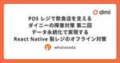

ダイニープロダクトブログ
https://note.com/dinii/m/mf6424286cfa2
【Zenn に dinii Tech Blog ( https://zenn.dev/p/dinii ) をオープンしました 。技術的な記事は今後 Tech Blog に掲載していく予定ですので、ぜひフォローください！】 ダイニーのプロダクト開発や開発組織、どんなプロダクトなのか、どのように開発しているのかについて書いているブログです。 「この人の書く記事はいつも面白いな」そう思っていただけたら、筆者の名前を公開していますので、ぜひエンジニアとカジュアル面談を通してよりダイニーについて、ダイニーのエンジニアについて知っていただけますと幸いです。 また、毎月ダイニー導入店で開催して
フィード

POS レジで飲食店を支えるダイニーの障害対策：第二回 データ永続化で実現する React Native 製レジのオフライン対策 1
1
ダイニープロダクトブログ
ダイニーの whatasoda です。前回記事に続いて、第二回となる今回はデータ永続化で実現する React Native 製レジのオフライン対策と題して、システムに障害が発生しても最低限のオペレーションをレジ単体で実現するガチャレジ機能についてご紹介します。ガチャレジとは、レジとして最低限の機能であるお金の管理に対応しているレジのことを指す俗称です。ダイニーがサービスを提供する飲食店ではお金の管理だけの機能では満足な営業を行うには不十分なため、この連載の中での「ガチャレジ」という表現は最低限の注文管理と会計機能を備えたレジまたはそのような振る舞いをする機能のことを指します。なぜお金の管理だけでは営業できないのか、どうしてガチャレジ対応が必要なのかについての説明は第一回の記事をご覧ください。 モバイルオーダー一体型 POS レジで飲食店を支えるダイニーの障害対策：第一回 POS レジの重要性と障害の原因zenn.dev 続きをみる
1日前

モバイルオーダー一体型 POS レジで飲食店を支えるダイニーの障害対策：第一回 POS レジの重要性と障害の原因
ダイニープロダクトブログ
こんにちは。whatasoda です。ダイニーではプロダクトの開発に用いるプログラミング言語を TypeScript に統一しており、事業の中核であるモバイルオーダー一体型オンライン POS レジのアプリケーションを React Native で開発しています。モバイルオーダー一体型オンライン POS レジにおいて何が障害となり得るのか、ダイニーがこれまでそれらの障害とどのように向き合ってきたのか、これから先どのように向き合っていくのかについて、連載記事でまとめていきます。初回となる今回は、レジがダイニーと飲食店それぞれにとって如何に重要なのか、そして障害が起きるとどれだけの影響があるのかという、障害対策の前提知識の部分についてご説明します。POS データは飲食店の要続きをみる
15日前
Letter for Data Engineer
ダイニープロダクトブログ
こんにちは！ダイニー Data team テックリードの kimujun です。最近は BigQuery Data Canvas に衝撃を受け、社内にちょっとずつ布教するなどの活動をしています。この記事ではダイニーの Data team がどのような未来を描き、その未来の実現に向けてどのような取り組みを考えているのかを、主に採用候補者の方に向けてお伝えしたいと思います。ダイニーとは続きをみる
19日前
成長を加速する組織
ダイニープロダクトブログ
ダイニー Engineering Manager の urahiroshi です。ダイニーのエンジニア組織は今まさに組織拡大中であり、今後どのような組織にしていきたいのか、そのために何が必要なのかといったところを日々考えています。現在のエンジニア組織については、以下のページのculture deckを参照ください。 dinii エンジニア採用情報 | NotionCulture Deck for Software Engineerdiniinote.notion.site 続きをみる
1ヶ月前
ダイニーが Prettier のスポンサーになりました！ 🎉
ダイニープロダクトブログ
こんにちは、ダイニーで VP of Technology を務めている karszawa です。本日は、ダイニーが開始した Prettier という OSS への寄付（スポンサー）について説明したいと思います。ダイニーが Prettier のスポンサーになりました 🎉続きをみる
1ヶ月前
モノレポで JavaScript のローカルパッケージをいい感じにできる『tamashii』というツールを作った話
ダイニープロダクトブログ
こんにちは。dinii の whatasoda です。モノレポで JavaScript のローカルパッケージをいい感じにできる『tamashii』というツールを作ったので作るに至った背景や機能についてまとめました。モノレポとローカルパッケージ続きをみる
1ヶ月前
「質問するな、動画を撮れ」ダイニーの圧倒的顧客思考によるプロダクト開発の鉄則
ダイニープロダクトブログ
こんにちは。こんばんは。ダイニーのプロダクトマネージャーの武本です。最近はダイニー社内で社外発信が活発になってきているので、頑張って発信をしていきます！ダイニーについて続きをみる
1ヶ月前
インシデントの「予防」「対応」「振り返り」を磨き込む！
ダイニープロダクトブログ
＜dinii Tech Blog (https://zenn.dev/p/dinii) をオープンしました。技術的な記事はTech Blogに掲載していきますので、ぜひこちらもフォローください！＞dinii は、飲食店での注文・会計といったミッションクリティカルな業務を行うためのプロダクトを開発・運用しています。こうしたプロダクトで障害が発生してしまうと、飲食店が営業できなくなってしまうほどのインパクトがあるため、プロダクトの信頼性・可用性・保守性を高めるための活動を積極的に行なっています。そういった活動の中心になっているのが、「インシデント対応」です。dinii が行っているインシデント対応を整理すると、「インシデント発生前」「インシデント発生中」「インシデント発生後」のそれぞれのタイミングにおける運用を洗練するための取り組みを行なっており、大まかに記載すると以下のようになります。インシデント発生前: インシデントのリスクを検知・予防するためのアクションインシデント発生時: インシデントに迅速に対応するためのアクションインシデント発生後: インシデントを振り返り、今後の学びとするためのアクション続きをみる
1ヶ月前
dinii における緊急事態とその訓練について
ダイニープロダクトブログ
こんにちは。Platform Teamで SWE をしている @HagaSpa です。dinii （ダイニー）では大規模障害が発生した状況を模した訓練を定期的に行っており、今回はその活動について紹介したいと思います！緊急事態訓練とは？続きをみる
2ヶ月前
dinii における Terraform の改善活動
ダイニープロダクトブログ
こんにちは。Platform Teamで SWE をしている 芳賀@HagaSpa です。dinii では IaC として Terraform を使っており、今回はその改善について取り組んだことを書きたいと思います。TL;DR続きをみる
8ヶ月前
インフラコスト削減ステップ ~ダイニーのGCP Projectを例として~
ダイニープロダクトブログ
ダイニーの @urahiroshi です。この記事では、ダイニーで行なっているインフラのコスト削減プロセスを例として、コスト削減をどのように進めていくと良いか解説したいと思います。フィードバック等あればぜひご連絡ください！コスト削減ステップ1. コストレポートの作成続きをみる
3ヶ月前
dinii (ダイニー) はコンパウンドスタートアップです
ダイニープロダクトブログ
dinii でテックリードをしている谷藤です。今回は dinii が取り組んでいるコンパウンドスタートアップ戦略について、主にプロダクト面から解説をしたいと思います。余談ですが、dinii の入社エントリを書いてから 2 年以上経過しましたが、dinii で働く毎日は非常に刺激的で楽しくて本当に入社して良かったとずっと思っています、dinii サイコーです！！続きをみる
3ヶ月前
dinii, estie, ナレッジワークの三社で「開発体制・プロセス」についての勉強会を行いました
ダイニープロダクトブログ
先日、dinii、株式会社estie、株式会社ナレッジワークの三社間で「toBスタートアップの開発体制・プロセス」についての合同勉強会を行いました。当初は一般の参加者も募るイベントとして企画していたのですが、諸般の都合により一般公開は中止しました。しかし、マルチプロダクト展開を行うtoBスタートアップとして共通している三社であり、せっかくの機会なので三社間の勉強会として改めて開催したものです。estie 社に会場をお貸しいただき、三社で10名強の参加者が集まりました。まずは雑談から始まり、それから各社の取り組み紹介と質疑応答を行いました。簡単にですが、各社の取り組みと質疑応答の内容について、こちらでシェアできればと思います。続きをみる
5ヶ月前
Letter for SWE (Platform Engineering)
ダイニープロダクトブログ
はじめまして、株式会社 dinii (以後ダイニー) で VP of Technology というロールを担っている karszawa と申します。この度、ダイニーで SWE (Platform Engineering) という新規の採用ポジションを公開しました。ダイニーでは全てのプロダクトで統一の技術（Node.js, React, Cloud Run, PostgreSQL）を採用しており、ソフトウェアの基盤部分を整理することによるスケールメリットが非常に大きいです。この記事では、そんなダイニーにおける基盤開発を担うこのポジションへの期待や「やりがい」について説明します。続きをみる
5ヶ月前
Letter for SRE (Incident Management)
ダイニープロダクトブログ
はじめまして、株式会社 dinii (以後ダイニー) で VP of Technology というロールを担っている karszawa と申します。この度、ダイニーで SRE (Incident Management) という新規の採用ポジションを公開しました。あまり聞き慣れない名称のポジションなので、このポジションが生まれた背景や、このポジションへの期待について説明します。続きをみる
5ヶ月前
ダイニー体験会 #3 @新橋 を開催しました
ダイニープロダクトブログ
こんにちは、ダイニーのソフトウェアエンジニアの urahiroshi です。ダイニーでは、年に1回くらいの頻度で「ダイニー体験会」というイベントを実施しています。（過去のレポはこちら）続きをみる
8ヶ月前
dinii と POS 連携
ダイニープロダクトブログ
こんにちは、株式会社 dinii で VP of Technology をしている @karszawa です。この記事は dinii プロダクトアドベントカレンダー n 日目の記事です（ただし n は自然数とします）。続きをみる
8ヶ月前
Hasura User Group Tokyo Meetup #03 を開催しました！
ダイニープロダクトブログ
2023年10月20日に浜松町ビルディング3階の ハマラボ!!! にて Hasura User Group Tokyo Meetup #03 を開催いたしました！前回のイベントから約9ヶ月ぶりの開催となってしまったのですが、多くの方々が集まってくださいました。また今回は Hasura 社の Senior Product Manager の方もトークセッションに参加してくださりました！続きをみる
9ヶ月前
Google Cloud 主催 Digital Native Leader’s Meetup #4 に参加しました！
ダイニープロダクトブログ
こんにちは。dinii CTO の大友です。先日開催された Google Cloud 主催の Digital Native Leader’s Meetup #4 にご招待いただき、参加してきました。実は前回も、LT 登壇付きで参加させていただいたので、dinii としては2回目の参加となります。前回の参加の記録続きをみる
10ヶ月前
Google Cloud 主催 Digital Native Leader’s Meetup #3 に参加 & LT 登壇しました！
ダイニープロダクトブログ
こんにちは dinii の Platform Team で SWE をしている @karszawa です。 Tweets by karszawa 続きをみる
1年前
スタートアップと Google Cloud のお付き合い
ダイニープロダクトブログ
こんにちは！dinii のソフトウェアエンジニア、kimujun (https://twitter.com/1130_kimu) です。この記事では生まれたての赤ん坊スタートアップだった dinii が、どのように Google Cloud を活用して成長してきたかをお見せしたいと思います。時間がない人は次の行だけでも読んでいってください。「Google Cloud 最高！」続きをみる
1年前
dinii のプロダクト開発を担うチームのスクラムをカイゼンした話
ダイニープロダクトブログ
こんにちは、dinii のエンジニアの谷藤 (@HiroIot) です！愛猫が大好きすぎて、最近は仕事以外の時間をすべて愛猫に注いでいます😽続きをみる
1年前
2023年版: dinii のプロダクト開発組織
ダイニープロダクトブログ
こんにちは、dinii CTO の大友(@dinii_k_otomo)です。dinii では、次の 50年の飲食インフラとなるべく、飲食店内向けモバイルオーダーと CRM サービス「ダイニー」を開発・運用しています。先日は、Coral Capital さん主催の Startup Aquarium にも参加させていただき、とても多くの人に dinii を知ってもらうきっかけにもなったかなと思います。ご参加頂いた皆様、どうもありがとうございました！！続きをみる
1年前